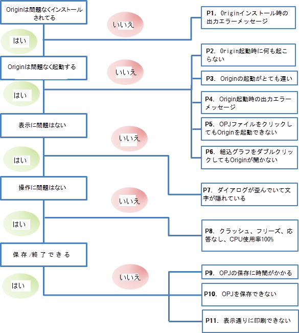

FAQ-780 理由不明でOriginが機能しないときはどのようにしたらいいでしょうか？
origin-not-work
最終更新日：2023/1/30
このクイックヘルプでは、Originの問題について自己診断をするための一般的な方法を紹介します。
- 
Originが正常にインストールされない
P1.Originをインストールするときにエラーメッセージが表示される
Originインストール中に「ikernal.exeのインストールエラー」のようなメッセージが現れる場合、インストール権限のないWindowsログインアカウントで実行していることが考えられます。詳細についてはこのクイックヘルプを参照してください。
Originが正常に起動しない
P2.Originを起動しても何も起こらない
このリンクから最新のサービスリリースをダウンロードし、現在のOriginをアンインストールして、ダウンロードしたインストーラを使用して新しくインストールします。再インストールの際には、新しいUser Filesフォルダを設定してください。解決しない場合は、このクイックヘルプを参照してください。
P3.Originを起動するのに、とても時間が掛かってしまいます。
この原因はいくつかあります。以下について一つずつチェックしてみてください。
- User FIlesフォルダ（UFF）がネットワークパスに置かれているか、ローミングプロファイルになっている場合、UFFをローカルパスに置いてください。
- プリンタドライバがOriginを混乱させ、デフォルトのプリンタをローカルマシンの別のプリンタにリセットすることがあります。
- 同時起動ライセンスを使っていて、Flexnetサーバーが遠隔地（例えば、海外）にある場合、あるいは、ネットワーク接続速度が非常に遅いような場合、ネットワーク接続状態によってOriginの操作が非常に遅くなってしまいます。ネットワークがOriginの起動を遅くしてしまっているかどうかを調べるには、ネットワークから一時的に切り離し、サーバーからライセンスを借りて、Originを再起動すると速くなるかどうかを試してみてください。
P4.Originを起動するときにエラーメッセージが表示される
- 起動時にDLLがないというメッセージが表示される場合、コンピュータ上にOriginが必要なMicrosoft DLLがないことを示しています。詳細についてはこのクイックヘルプを参照してください。
- 「システムフォルダのビルドに失敗しました」、「Xファンクションの実行に失敗しました」というエラーメッセージがOrigin起動時に表示される場合、このクイックヘルプのページを確認してください。
P5.OPJファイルをダブルクリックしてOriginを起動できない
この問題はWindows Vista以降、発生しており、Origin固有の問題ではありません。通常、エラーメッセージは、「プログラムにコマンドを送信しているときに、エラーが発生しました。」というものです。これはいくつかのPCで起こっており、まだ完全に解決されていません。このクイックヘルプで、この問題を修正する方法を確認できます。
P6.埋め込みOriginグラフをダブルクリックしてもOriginが起動しない
Word/PowerPoint に埋め込まれたOriginのグラフをダブルクリックしてもOriginが起動しない場合、このクイックヘルプを確認してください。
Originが正常に表示されない
P7.ダイアログが歪んでいる、項目が表示されない
大きいDPI 設定で高解像度のスクリーンを使用しているとき(Windowsのコントロールパネル\デスクトップのカスタマイズ\ディスプレイページで中-125% または 大-150%)、Originダイアログのレイアウトに不具合があったり、ツールバーボタンがとても小さくなることがあります。Originは、高解像度での表示について改良を続けています。詳細については、このFAQを参照してください。Origin を最新バージョンにアップグレードしてください。メニューのヘルプ: ヘルプファイルの取得/アップデートのチェックから、利用可能な新しいバージョンがあるか確認するか、当社のWebサイトから新しいバージョンのインストーラ (EXE または ZIP) またはサービスリリースパッチをダウンロードします。
古いバージョンのOriginを使用していて、アップグレードしたくない場合は、このクイックヘルプのように、ダイアログを管理するレジストリエントリの削除をお試しください。
Originが正常に動作しない
P8.Originがクラッシュ、フリーズ、応答なし、フルCPUを消費する、グラフエクスポートに失敗する
- Originは様々な理由でクラッシュします。例えば、特定のツールや特定の操作、特定のOriginプロジェクト/ワークブック/グラフを使用しているときに起こることがあります。このクイックヘルプでクラッシュ関連の解決方法を確認できます。
- Origin内でExcelを使用すると、時々Originが応答しなくなり、Excelエラーメッセージが表示されることがあります。この場合、このクイックヘルプを確認してください。
- グラフのエクスポートやメニューの選択時に応答がない、外部呼び出し実行エラーやxxx.dllが見つからないなどのメッセージが表示されるなど、不明な理由でOriginが機能しない場合は、このクイックヘルプページを参照してください。
- 特定のOriginプロジェクトがコンピュータの全CPUを使用していたり、OPJファイルのサイズが理由もなく大きい場合には、このクイックヘルプを確認してください。
Originを正常に保存/閉じる/印刷できない
P9.OPJの保存に時間がかかる
- Originプロジェクトのサイズがとても大きい場合、Originの起動が遅く感じることがあります。スピードアップするには、Originプロジェクトの内容を分割していくつかの小さいファイルに分けます。
- Originプロジェクトのサイズが大きすぎない(100Mバイト以内)が、保存に時間がかかる場合、プリンタに問題があることがあります。規定のプリンタを異なるものに変更してOriginプロジェクトを再度保存しても、問題が起こるかどうか確認してください。
P10.OPJの保存ができない
Originを閉じる前に全ての開いているダイアログ閉じてくださいというメッセージが表示され、OPJの保存ができないことがあります。しかし、開いているダイアログが確認できず、閉じることができないことがあります。その場合、このクイックヘルプで紹介している2つの方法をお試しください。
プロジェクトに1つ以上のExcelブックが含まれていて、プロジェクトの保存時に外部のExcelブックの保存が失敗したことにより、保存ができませんでしたというエラーメッセージが表示された場合は、このクイックヘルプのページを参照して問題を解決してください。
P11.表示のまま印刷されない
- 印刷の前に印刷プレビュー（メニューのファイル：印刷プレビュー）を表示して、印刷された場合の表示を確認します。
- 印刷で得られる内容が思っていたものと異なることがあります。たとえば、レイヤ寸法が違う、グラフラベルの位置が違うなどです。解決方法は、このクイックヘルプを確認してください。
- EMF / PDF / EPSとしてグラフをエクスポートするか、WordまたはPowerPointに貼り付けをコピーするとグラフが途切れたり、余分に大きな余白がある場合は、このクイックヘルプを参照してください。
関連トピック：
キーワード:クラッシュ, 動作しない, バグ, 修正, エラーメッセージ